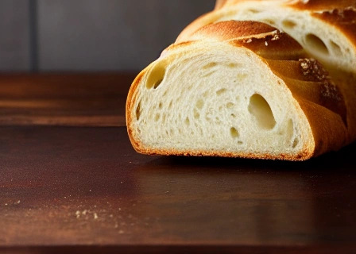

Le site internet de la boulangerie L'ami du pain à St Marcellin, France
Bienvenue sur le site internet de la boulangerie L'ami du pain à St Marcellin, France. Nous sommes une boulangerie artisanale qui propose une large sélection de pains, viennoiseries, pâtisseries et sandwichs. Tous nos produits sont faits maison avec des ingrédients de qualité supérieure.
Nous sommes fiers de proposer une grande variété de pains, y compris des pains traditionnels français tels que la baguette, la ficelle et la boule. Nous proposons également des pains spéciaux tels que le pain complet, le pain aux noix et le pain aux olives.

Nous proposons également une large sélection de viennoiseries, y compris des croissants, des pains au chocolat, des brioches et des pains aux raisins. Tous nos produits de boulangerie sont cuits chaque jour pour garantir leur fraîcheur et leur qualité.
En plus de nos produits de boulangerie, nous proposons également une sélection de pâtisseries françaises traditionnelles telles que les éclairs, les tartes aux fruits et les macarons. Nous proposons également des sandwichs frais préparés chaque jour avec des ingrédients de qualité.
Nous espérons vous voir bientôt à la boulangerie L'ami du pain à St Marcellin, France!